The BlitZave guide
From nothing to your first calm month. Setup takes about ten minutes, most of it in SimpleFIN. After that, each chapter walks through one page of the app: what it shows, and the few things worth doing there.
Install BlitZave
Two commands, and BlitZave opens in your browser.
-
Install uv. uv runs Python apps and installs Python 3.12 for you if you need it. On a Mac you can also run
brew install uv.curl -LsSf https://astral.sh/uv/install.sh | sh -
Install BlitZave. This gives you a
blitzavecommand that works from any folder. There's nothing to clone.uv tool install git+https://github.com/blitzave/blitzave -
Start it. The first run creates your data folder at
~/BlitZaveand opens 127.0.0.1:8742 in your browser. Keep the terminal open while you use it; Ctrl + C stops it.blitzave
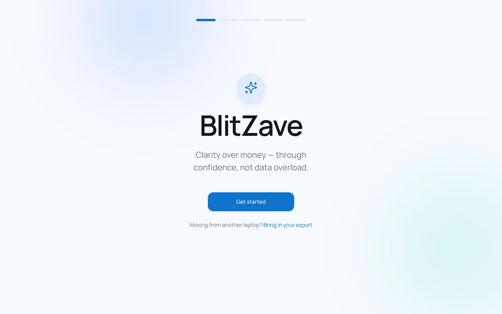
Day to day
Run blitzave whenever you want to look. It syncs with your bank as it starts, so the latest is already there when the page opens. Sync now in the top bar fetches again any time.
Updating
Stop BlitZave, then upgrade and start it again. If the new version changes how your data is stored, BlitZave copies your database first and keeps the last three copies in ~/BlitZave/backups. It never touches your transactions.
uv tool upgrade blitzave
blitzaveIf something's off
| What you see | What to do |
|---|---|
command not found: blitzave | Run uv tool update-shell, then open a new terminal. |
Git operation failed | uv needs Git. Run xcode-select --install, then install again. |
address already in use | BlitZave is already running in another terminal. Use that one, or stop it first. |
Connect your bank with SimpleFIN
One token, pasted once. After that, BlitZave reads your accounts on its own.
What SimpleFIN is
SimpleFIN Bridge is a small, independent service that connects to your banks and lets apps you choose read your balances and transactions. It's read-only: an app connected through it can see, and can never move money.
You bring your own SimpleFIN account, so the bank connection belongs to you, not to BlitZave. There's no BlitZave server in the middle. SimpleFIN charges a small subscription, paid directly to them.
Get a setup token
- Create an account at bridge.simplefin.org.
- Connect your banks and cards there. SimpleFIN walks you through each one; your bank login goes to SimpleFIN's connection, never to BlitZave.
- Create a new app connection and copy the setup token it shows you. It's a long string of letters and numbers.
Paste it into BlitZave
- On the welcome screen, choose Get started.
- Paste the token into Setup token and choose Connect.
- BlitZave runs its first sync, about the last 90 days. That usually takes a few seconds.
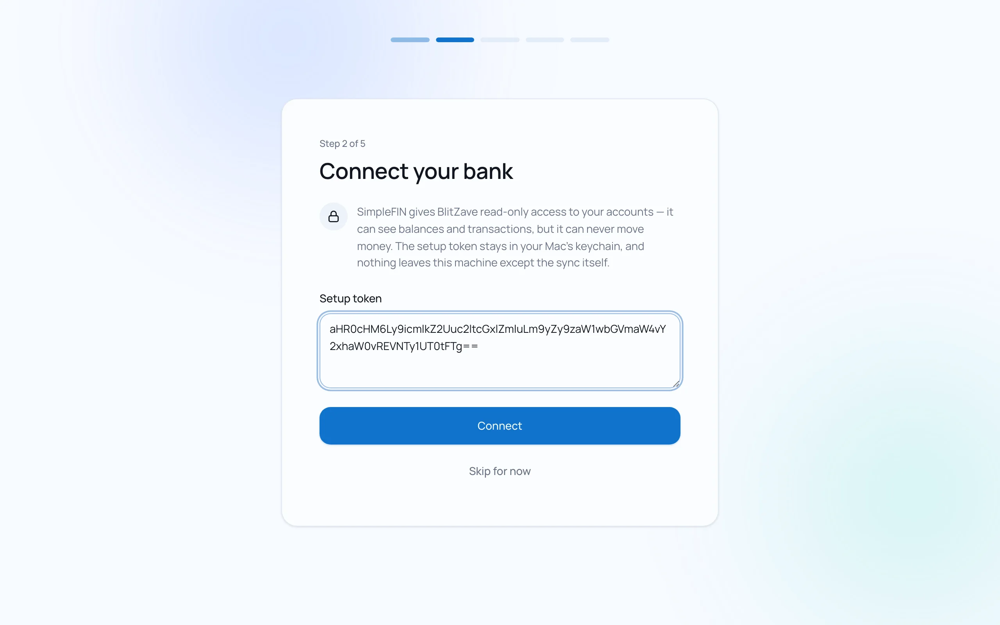
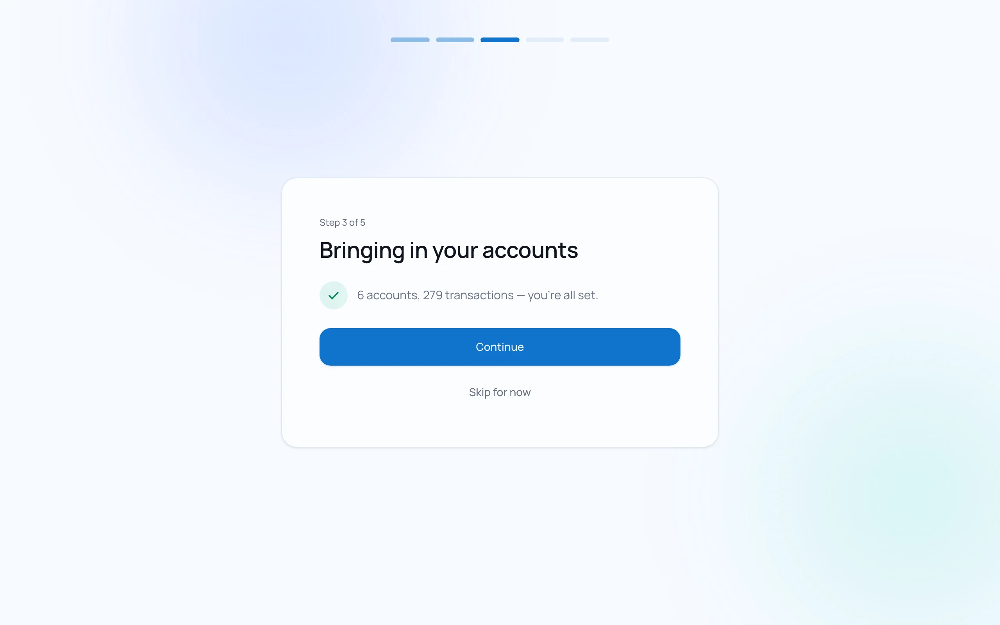
blitzave. It's never in the database, the logs, or an export.The last two steps
Meet your accounts lists what came in. Checking, savings and credit cards are supported today; investment and loan accounts are skipped for now. You'll give each account its job in the next chapter.
You're set asks one question: should BlitZave check GitHub once a day for a new version? It's off unless you say yes, and it sends nothing about you. Then choose Take me in, or Set my first goal if you already know what you're saving for.
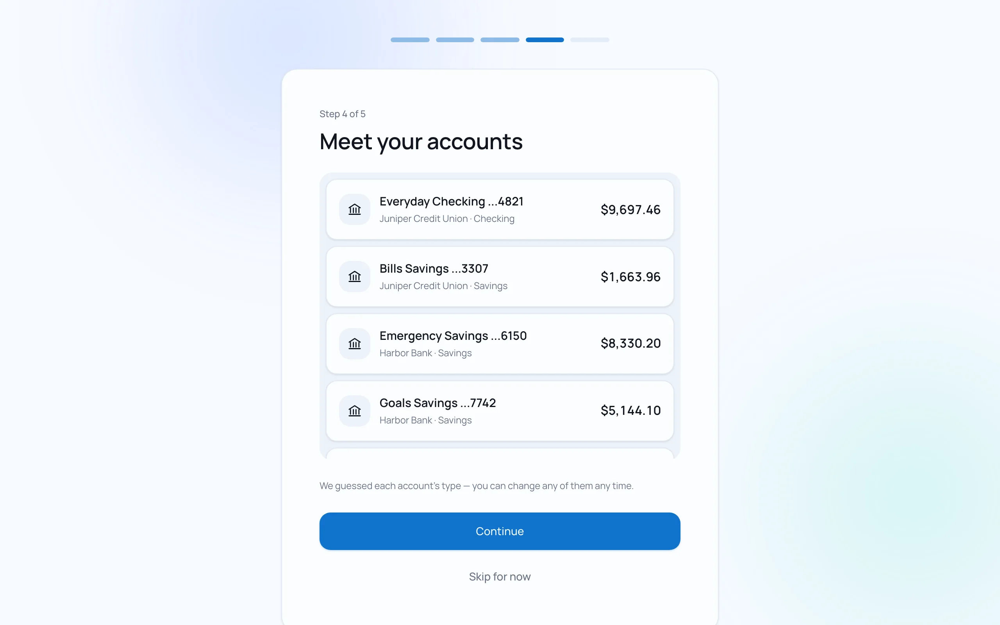
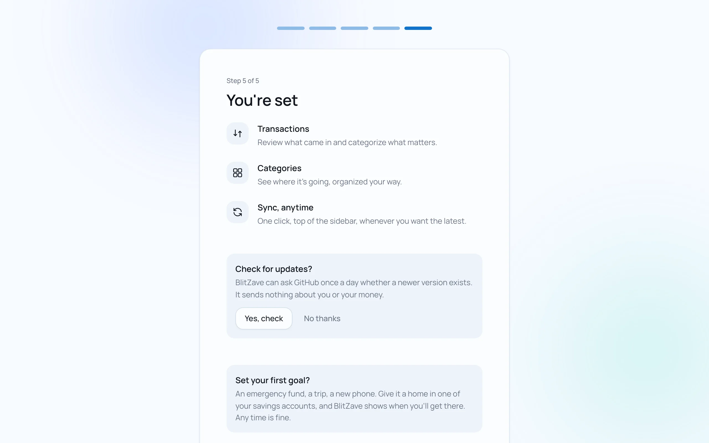
If SimpleFIN stops working
| What you see | What to do |
|---|---|
| "SimpleFIN access was revoked" | Make a new setup token in SimpleFIN. Open 127.0.0.1:8742/docs, expand POST /api/connect, choose Try it out, and send {"setup_token": "…"}. It replaces the old credential. |
| "Your SimpleFIN subscription needs payment" | Renew it with SimpleFIN, then choose Sync now. |
| A bank is missing | Check it's connected in SimpleFIN, then sync again. Investment and loan accounts aren't brought in yet. |
Give every account its job
A minute here is what lets BlitZave tell saving from spending.
Every bank account does one of three jobs, and the Accounts page groups them that way. Cards get their own group, drawn as card faces.
| Job | What it's for | Counts as set aside? |
|---|---|---|
| Checking | Pay comes in. Everyday spending and card payments go out. | No |
| Savings | A short buffer. Rent and bills wait here until they're due. | No: it's this month's money |
| Goal account | Goals live here. Money for something months or years away. | Yes |
Mark your goal accounts
BlitZave guesses checking or savings from each account's name, and it never guesses a goal account. That one is your call.
- On Accounts, open the ⋯ menu on the savings account you save toward goals in.
- Under What's this account for?, choose Goal account, then Save.
- Do the same for any other account that holds goals. Your choice survives every sync.
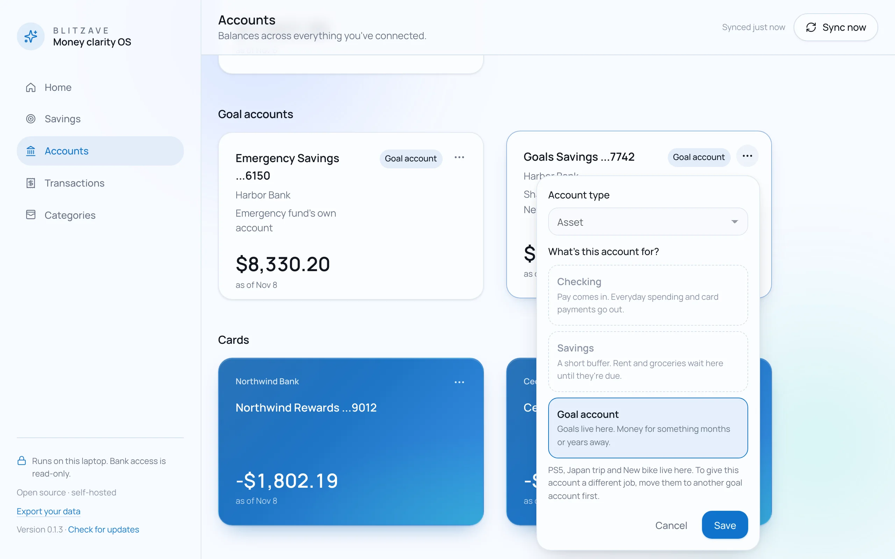
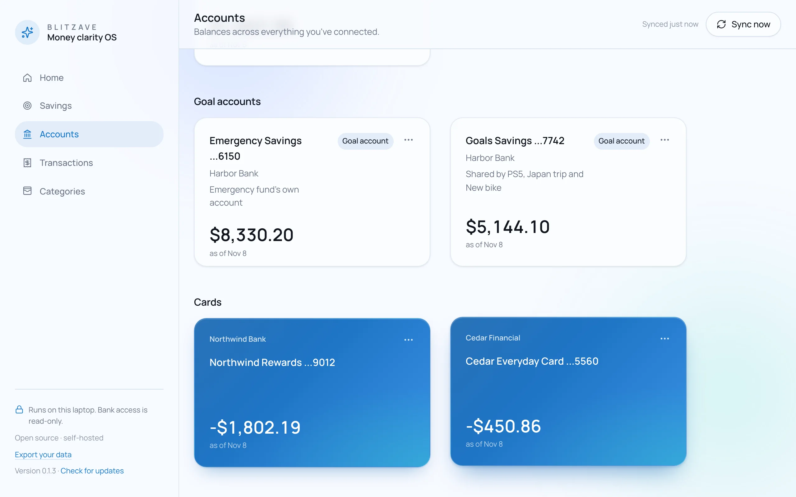
NextTransactions
Transactions, a month at a time
Every account in one list. Teach it a merchant once and it remembers.
The Transactions page shows one month. Use the arrows to move between months, search by description, or narrow the list by tag, account or category. Sort by date, description or amount from the column headers.
Amounts, dates and descriptions come from your bank and can't be edited. What you add on top (categories, splits, tags, links) is yours.
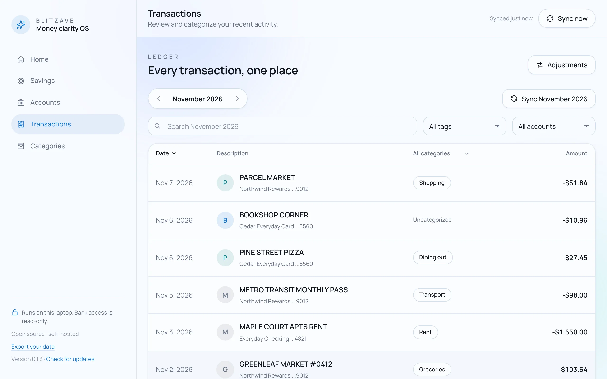
Categorize a purchase, and all like it
- Click a transaction to open it.
- Under Category, choose Choose a category and pick one.
- Pick Just this one, or All transactions like "…" to teach BlitZave the merchant.
- Choose Save category.
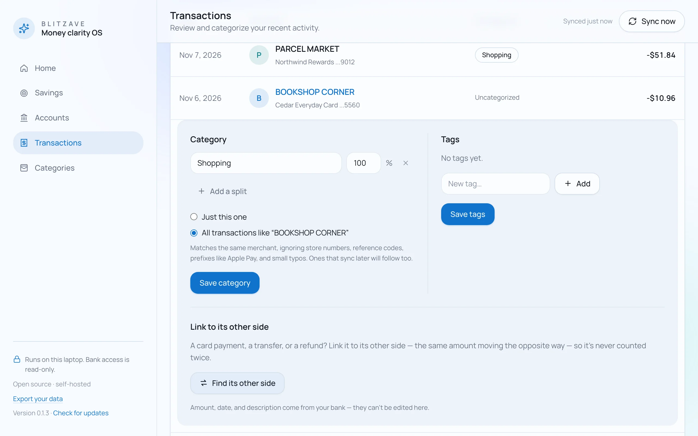
- Your choices win. A sync only fills in transactions that don't have a category yet. Choosing "all like this" again for the same merchant replaces the old rule.
- Split one purchase with Add a split: a supermarket run that was half groceries and half household, say. The percentages need to add up to 100.
- Tags group transactions across categories, like everything from one trip. Add them in the same panel, then filter by tag.
Every dollar counted once
Moving $500 from checking to savings isn't spending, and paying a card bill isn't spending twice. BlitZave links the two sides of each one, so they never count as spending.
- Automatically, on every sync, for card payments, transfers between your accounts, and refunds: the same amount moving the opposite way within two days, when there's exactly one match.
- By hand for anything it leaves alone: open the transaction, choose Find its other side, and pick the match.
- Review them with Adjustments at the top of the page. If a link is wrong, choose Unlink; a pair you unlink is never linked automatically again.
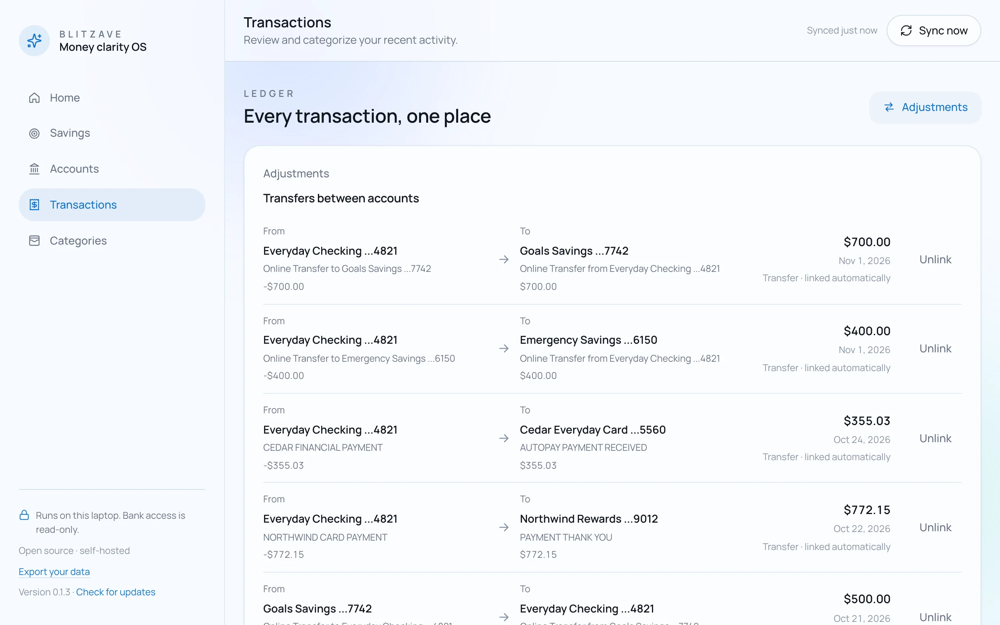
Categories and budgets
A little context for your spending. Going over is information, never a red mark.
A category is Expense, Income or Savings. Goals are savings categories too, but you make them on the Savings page (chapter 6), and they're listed first here: pay yourself first, even in the layout.
Add a category and a budget
- On Categories, choose New category. Give it a Name and a Kind, then Add category.
- Open the category and choose Edit budget. Enter the amount.
- Under Every, choose how often it repeats: every month, or every 2, 3, 4, 6 or 12 months for things like gifts, insurance or a yearly subscription.
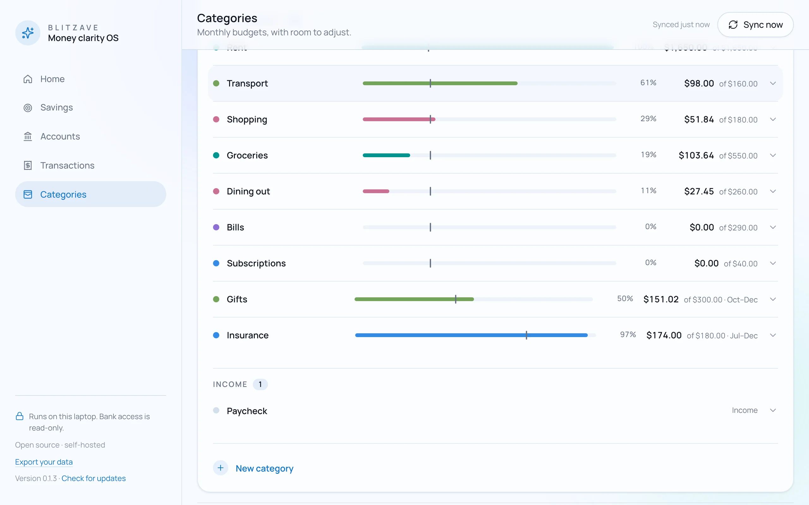
Reading a budget
Open any category to see the detail: what's been spent and what's left this round, a sentence about the pace, and where the round would land at this pace. November transactions jumps to the purchases behind it.
A budget that repeats every few months works in rounds that follow the calendar: every 3 months means Jan–Mar, Apr–Jun, and so on. Each round starts fresh. When one closes, BlitZave notes what was left or what it ran over by, under Closed this year.
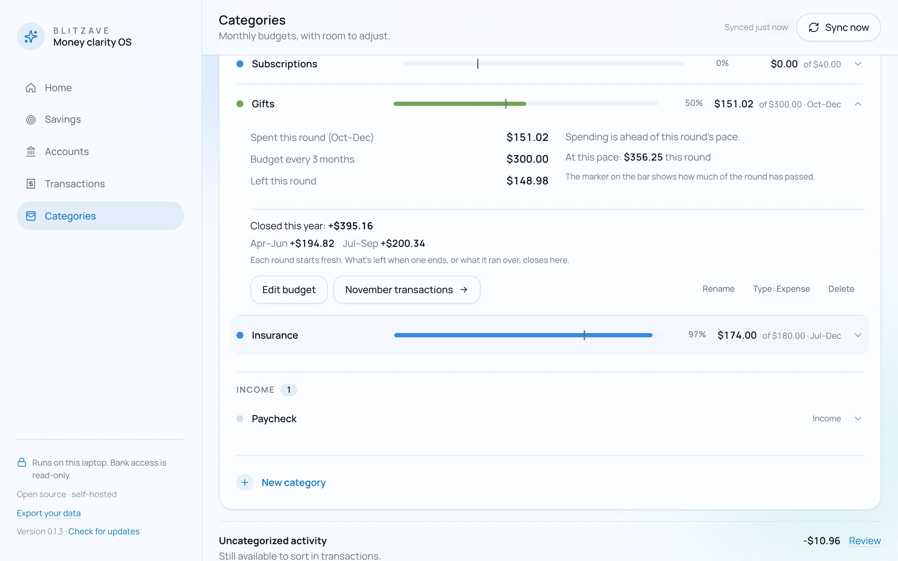
The month's summary
- Move between months with the arrows at the top of the list. Budgets carry forward each month.
- Refunds reduce a category's spending. A returned purchase cancels out, as it should.
- Uncategorized activity sits at the bottom with its total. Review opens those transactions so you can sort them.
Goals and Savings
Something you're saving toward, the account that holds it, and when it gets there.
Make a goal
- On Savings, choose New goal. Give it a Name and an Amount.
- Under How important is it?, pick Critical (can't go without it: an emergency fund, runway, a down payment, education) or Regular (nice to have: trips, gadgets, treats).
- Under Where it lives, pick its goal account. A critical goal needs an empty one to itself; regular goals can share. Accounts that are taken say who holds them.
- Under When, choose One time with a Target date, or tick No target date for an amount you just want to hold, like an emergency fund. Recurring is for an amount every few months.
- Save. A new goal joins the end of its account's line.
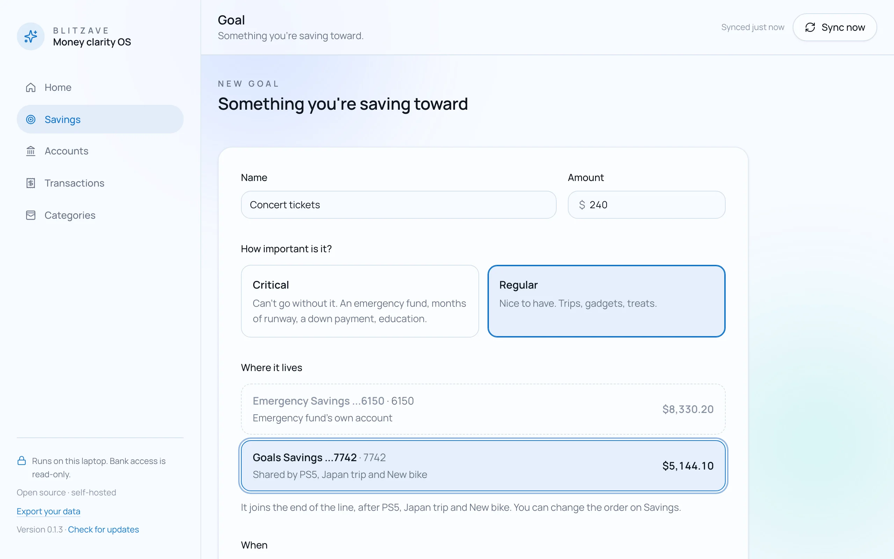
The Savings page
At the top: everything set aside across your goal accounts. Then each critical goal with its own ring (it can pass 100%, because the whole account counts toward it), then each shared account with its line of goals.
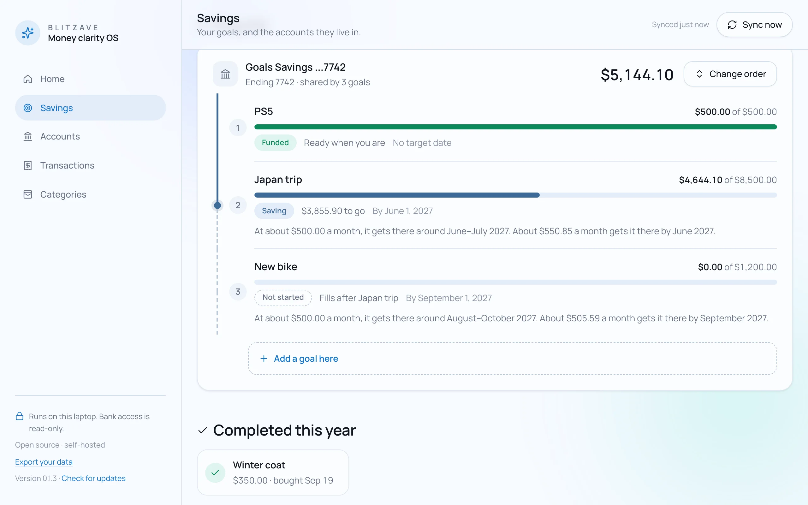
- Where each goal stands: Not started, Saving, Funded, or Completed, with how much is there and how much is still to go.
- When it gets there: "At about $500.00 a month, it gets there around June–July 2027." The range runs from your last three months' pace to your last six, so one light month barely moves it. With a target date, it also says what a month would take to make it.
- Change order puts arrows on each goal. Move one up and the money moves with it, right away, because the split comes from the account's balance.
When you buy it
When money leaves a goal account and the amount matches a funded goal, Savings asks once: "$500.00 left this account. Was that the PS5?"
- Yes, I bought it moves the goal to Completed this year, and the goals below it move up.
- It was something else leaves the goals alone. The money comes off the bottom of the line.
You can also open any goal and choose Mark as bought. A completed goal can go Back to saving.
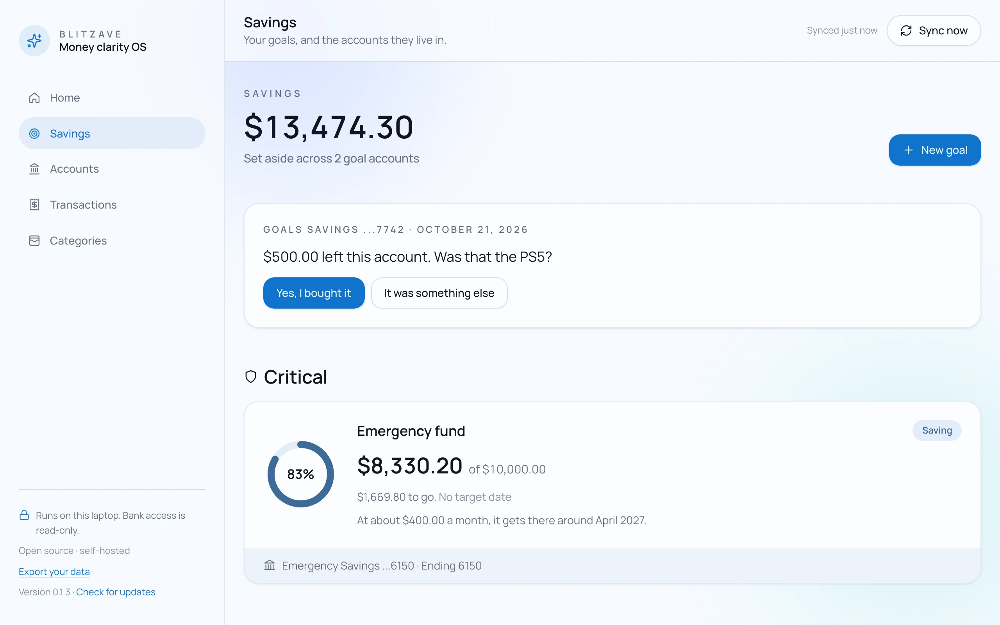
NextHome
Home: the one thing worth knowing
Not a dashboard. One sentence, chosen from everything above.
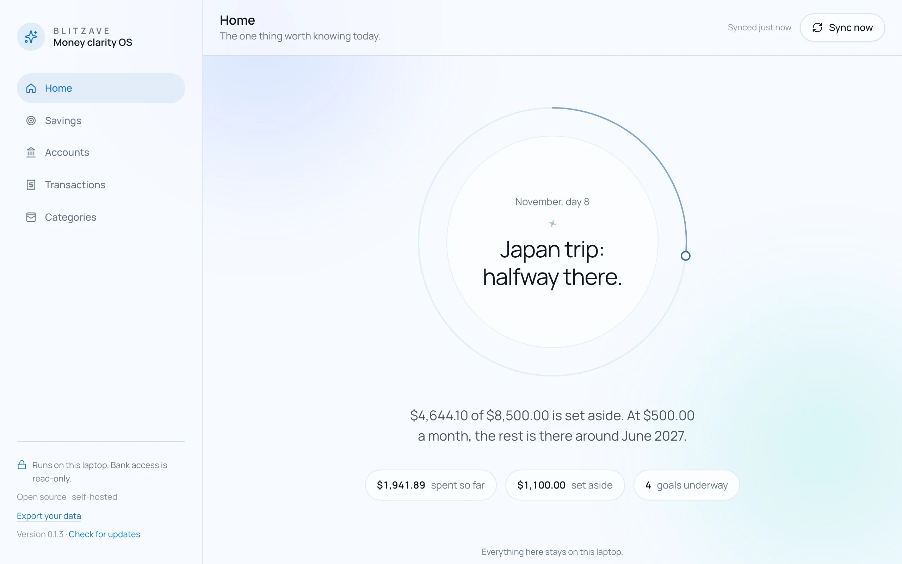
BlitZave opens on Home. It checks a short list in order and says the first thing that's true. Wins come first, and a heavier month is met with context, never a warning.
| When | Home says |
|---|---|
| Less than a month of history | Getting to know your money. |
| A goal was reached this week | Emergency fund: done. |
| A goal passed a quarter, half or three-quarters this week | Japan trip: halfway there. |
| Spending is running well ahead of your usual pace | A heavier start. That happens. |
| A goal is within a quarter of its amount | Almost there. |
| Savings moved before most of the month's spending | You're in good shape. |
| Your usual savings day has passed and nothing's moved yet | A quiet month for savings so far. |
| Everything else | Nothing needs you today. |
- Milestones at 25, 50, 75 and 100% each get one moment, in words, with a tiny star. A dip is never news: nothing is ever "lost."
- Set aside means money that went into goal accounts this month, minus money that came out. Interest doesn't count; it isn't something you did.
- The three figures under the sentence open the detail: spent so far goes to Transactions, set aside and goals underway go to Savings.
NextYour data
Your data, on your laptop
One file you own, and a way to take it with you.
| What | Where |
|---|---|
| Everything BlitZave knows | ~/BlitZave/blitzave.db, one SQLite file |
| Your SimpleFIN credential | Your Mac's keychain, under blitzave |
| Copies made before an update | ~/BlitZave/backups, the last three |
| Anything else | Nowhere. There's no server. |
Export, and move to a new laptop
- Choose Export your data at the bottom of the sidebar. It saves one file with every account, transaction, category, goal, rule and link, and nothing about your bank login.
- On the new laptop, install BlitZave (chapter 1) and start it.
- On the welcome screen, choose Bring in your export and pick the file. It only goes into a fresh install, and it's all or nothing.
- Connect SimpleFIN again (chapter 2). Your categories, rules and goals are already there.
Back up
Copy the database while BlitZave is stopped, or any time with SQLite's own backup:
sqlite3 ~/BlitZave/blitzave.db ".backup ~/blitzave-backup.db"To keep the data folder somewhere else, start BlitZave with BLITZAVE_HOME=~/Documents/BlitZave blitzave.
What leaves your laptop
- The bank sync, to your own SimpleFIN account. That's the only call BlitZave makes by default.
- The update check, if you turned it on: one request to GitHub a day, which sends nothing about you or your money.
- Nothing else. BlitZave only answers on 127.0.0.1, so other devices on your network can't reach it. No analytics, no telemetry, no remote fonts.
Uninstall
Stop BlitZave, uninstall it, delete ~/BlitZave, then remove the keychain entry. On a Mac you can also delete the item named blitzave in Keychain Access.
uv tool uninstall blitzave
uvx keyring del blitzave simplefin_access_urlThat's the whole of it.
Stuck, or something reads wrong? Ask on Discord or open an issue. Leave your real numbers out; describe the shape of the data instead.